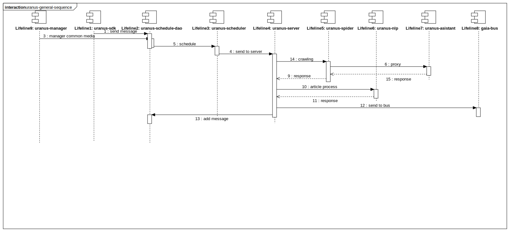
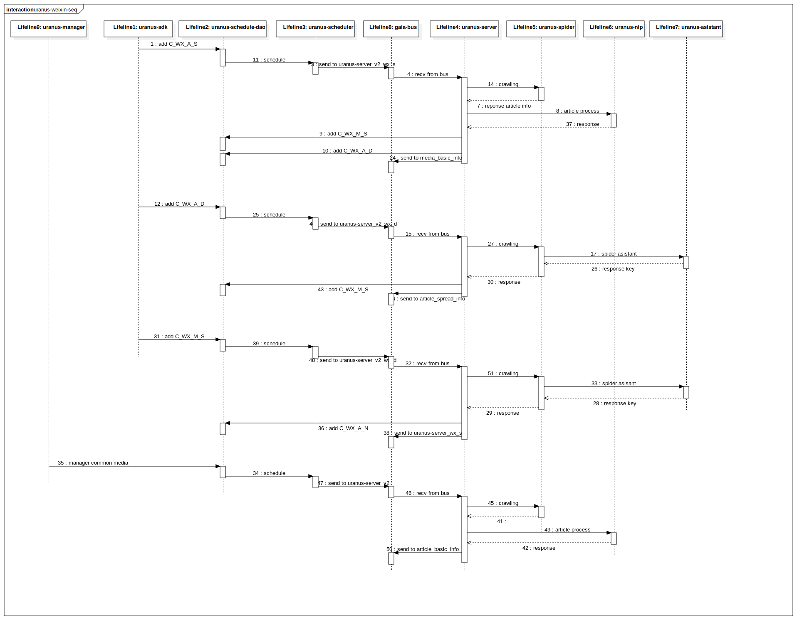

uranus-sequence
UMLInteraction
uranus
::
逻辑视图
::
内部接口
::
内部交互接口（新）
::
组件交互序列图
::
uranus-sequence
Description
none
Diagrams

uranus-general-sequence

uranus-weixin-seq
Participants
Lifeline1: uranus-sdk
Lifeline2: uranus-schedule-dao
Lifeline3: uranus-scheduler
Lifeline4: uranus-server
Lifeline5: uranus-spider
Lifeline6: uranus-nlp
Lifeline7: uranus-asistant
Lifeline8: gaia-bus
Lifeline9: uranus-manager
Messages
send message (Lifeline1→Lifeline2)
manager common media (Lifeline9→Lifeline2)
schedule (Lifeline2→Lifeline3)
send to server (Lifeline3→Lifeline4)
crawling (Lifeline4→Lifeline5)
proxy (Lifeline5→Lifeline7)
response (Lifeline7→Lifeline5)
response (Lifeline5→Lifeline4)
article process (Lifeline4→Lifeline6)
response (Lifeline6→Lifeline4)
send to bus (Lifeline4→Lifeline8)
add message (Lifeline4→Lifeline2)
add C_WX_A_S (Lifeline1→Lifeline2)
send to uranus-server_v2_wx_s (Lifeline3→Lifeline8)
crawling (Lifeline4→Lifeline5)
reponse article info (Lifeline5→Lifeline4)
recv from bus (Lifeline8→Lifeline4)
response (Lifeline6→Lifeline4)
add C_WX_M_S (Lifeline4→Lifeline2)
add C_WX_A_D (Lifeline4→Lifeline2)
send to media_basic_info (Lifeline4→Lifeline8)
send to uranus-server_v2_wx_d (Lifeline3→Lifeline8)
response key (Lifeline7→Lifeline5)
article process (Lifeline4→Lifeline6)
crawling (Lifeline4→Lifeline5)
send to article_spread_info (Lifeline4→Lifeline8)
add C_WX_M_S (Lifeline4→Lifeline2)
send to uranus-server_v2_wx_d (Lifeline3→Lifeline8)
add C_WX_A_D (Lifeline1→Lifeline2)
recv from bus (Lifeline8→Lifeline4)
response (Lifeline5→Lifeline4)
recv from bus (Lifeline8→Lifeline4)
send to uranus-server_wx_s (Lifeline4→Lifeline8)
response key (Lifeline7→Lifeline5)
schedule (Lifeline2→Lifeline3)
spider asistant (Lifeline5→Lifeline7)
response (Lifeline5→Lifeline4)
spider asisant (Lifeline5→Lifeline7)
crawling (Lifeline4→Lifeline5)
schedule (Lifeline2→Lifeline3)
schedule (Lifeline2→Lifeline3)
send to article_basic_info (Lifeline4→Lifeline8)
crawling (Lifeline4→Lifeline5)
recv from bus (Lifeline8→Lifeline4)
manager common media (Lifeline9→Lifeline2)
(Lifeline5→Lifeline4)
response (Lifeline6→Lifeline4)
send to uranus-server_v2 (Lifeline3→Lifeline8)
article process (Lifeline4→Lifeline6)
add C_WX_M_S (Lifeline1→Lifeline2)
add C_WX_A_N (Lifeline4→Lifeline2)
Properties
Name
Value
name
uranus-sequence
stereotype
null
visibility
public
isReentrant
true
Owned Elements
uranus-general-sequence
uranus-weixin-seq